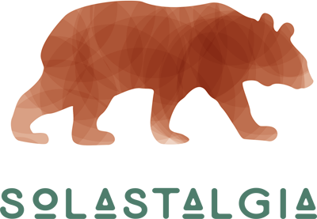

Individually we are Jonathon Reed and Asad Chishti; together we make up Chairs and Tables. We’ve been collaborating for years and at some point along the line started a company to keep our work under the same umbrella. It helps keep off the rain.
We get asked this a lot, and the answer is often varied and context-dependent. The simplest answer is we can do whatever you need us to.
We’re highly experienced in photography and videography in a variety of contexts: quickly, slowly; landscapes, portraits. We’ve created a variety of photographic projects.
We have experience in organizing different events, conferences and forums; from hosting small workshops to leading national-level programs and conferences.
Interviewing, documentation, and being ethnographers. We can communicate the data and stories in a powerful way. A rare breed of artsy scientists, and sciency artists.
We believe in building things ourselves as much as possible, which means we’ve developed professional-level skills in graphic design and website development.
We can augment your digital strategies and tactics with technological duct tape. Just about anything with computers, we either know where to look or how to do it.
Nearly all of our work depends on meaningful and constructive collaboration. We have become skilled at building connections between organizations and people.

So far there’s no planned-out incentive to join the mailing list. Maybe there will be in the future. So far we can say no spam, high-quality writing and thoughtful preparation. Plus staying in touch as we prepare to bicycle across the country.
For six months in 2017, we are bicycling 15,000 km across Canada; from the Avalon Peninsula on the Atlantic Ocean, to the Mackenzie Delta near the Arctic, to Vancouver Island in the Pacific. As we cross the country, we will develop an image of Canada as it is today—a snapshot of the present that provides context from the past in order to create a vision for the future.
Solastalgia, a digital publication, is an attempt to share a plurality of Canadian perspectives and their individual responses to climate change. Our hope and our vision is that by collecting and amplifying diverse voices from around our country, we can simultaneously get a deeper and wider, more complex and simpler understanding of this crisis that we collectively face.